KBH Construction · Jeddah
Every screen in the cash book, photographed from the finished app running against the live database — as the Owner sees it, as a head of employees sees it, and as a worker on site sees it.
Everyone
A Saudi mobile number and a four-digit PIN. The PIN is checked on the server, never on the phone, and five wrong tries lock the number for fifteen minutes.
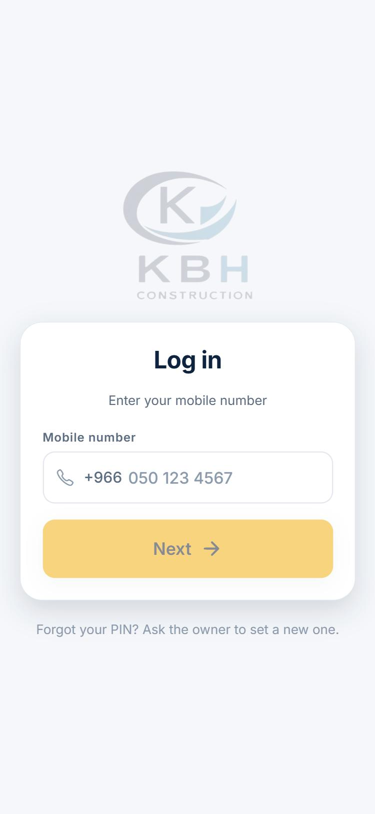
Owner & Admin · Saleem
An Admin and a Sub-admin see exactly the same thing. The Owner account carries one extra rule: nobody but the Owner can change it, turn it off, or take it off Admin — and that rule lives in the database, not just on the screen.
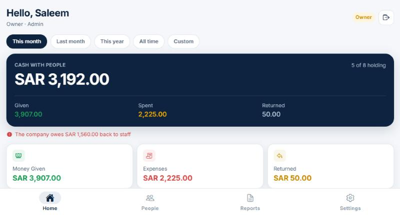
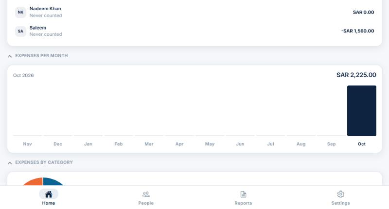
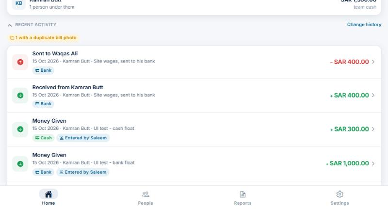
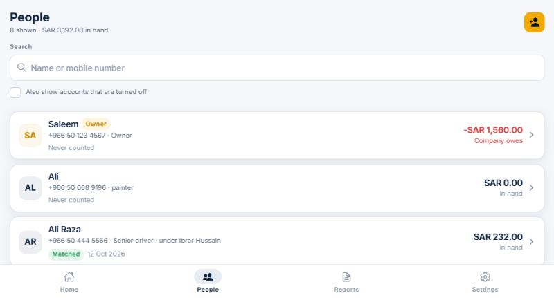
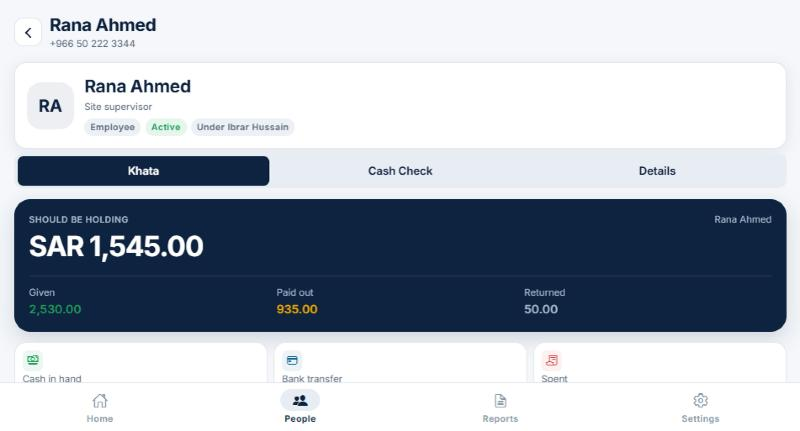
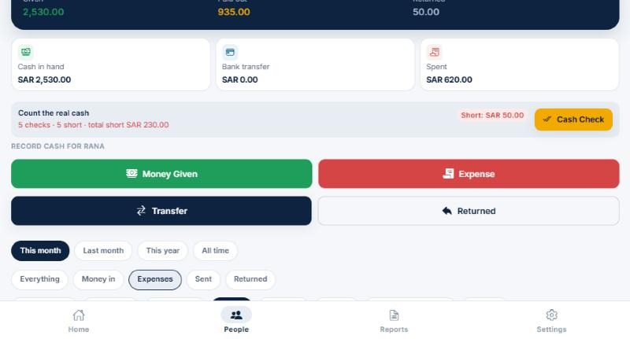
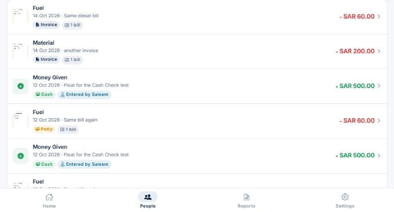
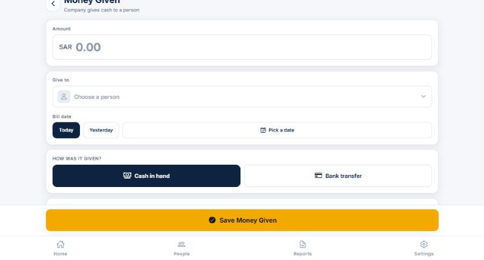
Owner & Admin
One filter at the top drives everything below it — the figures, the three PDFs and the photo ZIP. If the totals ever disagree with the app's own figure, no report is made at all.
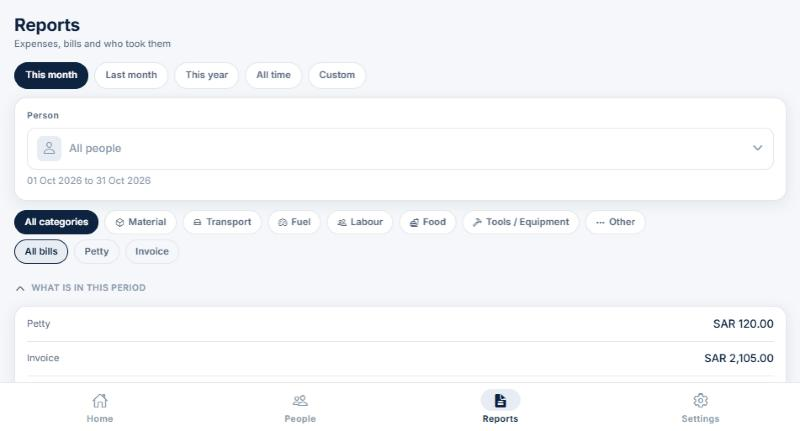
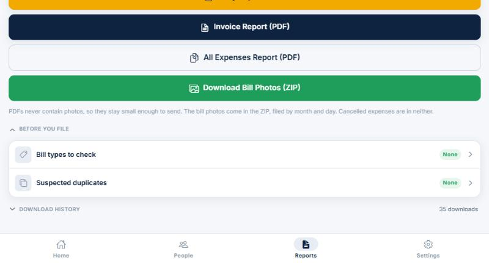
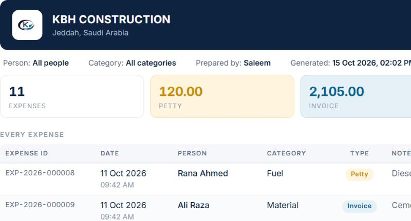
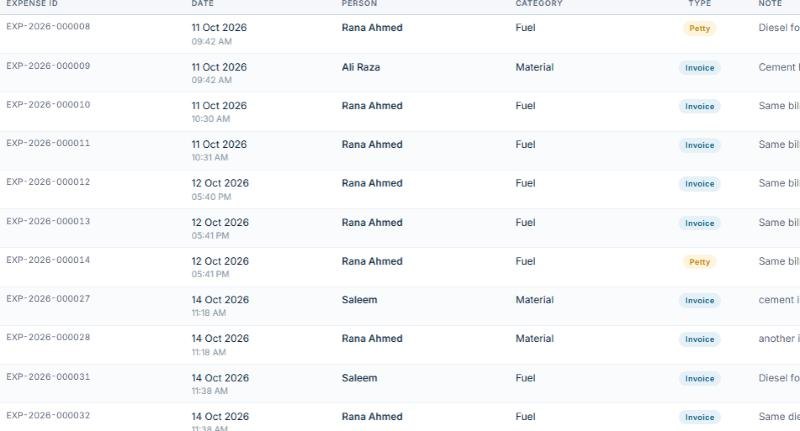
EXP-2026-000008 that nothing else in the books can reuse.
Owner & Admin
Nothing in KBH Records is ever really deleted. A removed entry is hidden and can be put back; a cancelled one leaves the balances but stays in the record.
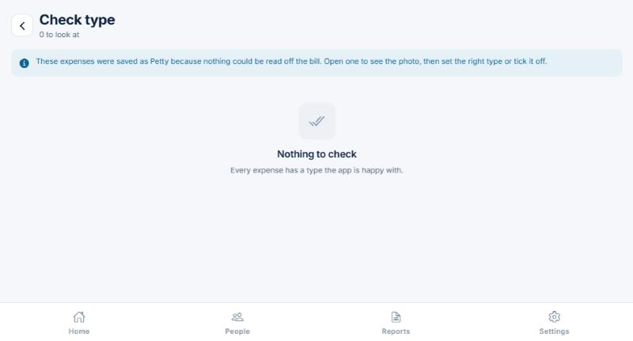
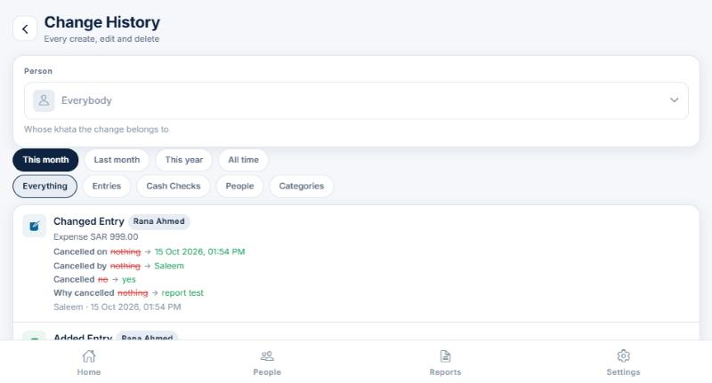
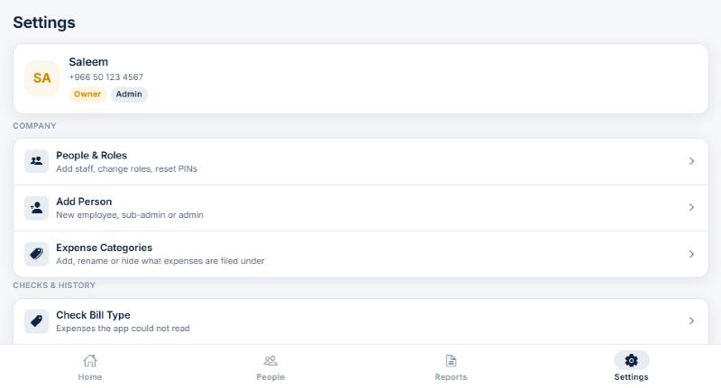
Head of employees · Kamran
A head is an employee with two extra powers: he can pass his own cash down to the people under him, and he can see what they spent. He cannot see anybody else's team, cannot hand himself company money, and cannot reach the back office.
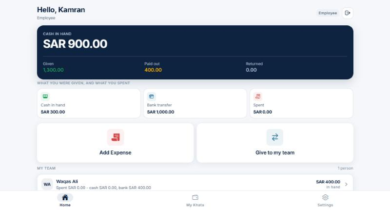
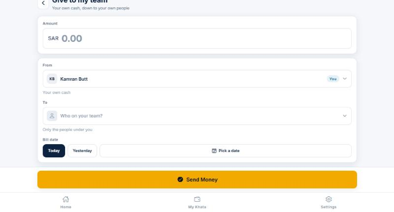
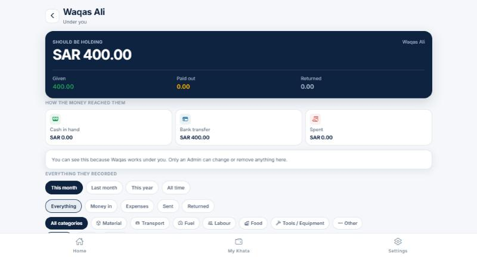
Employee · Waqas
One job: record what he spent, with the bill. He cannot hand money to anyone, cannot edit or delete, and sees nothing of any colleague.
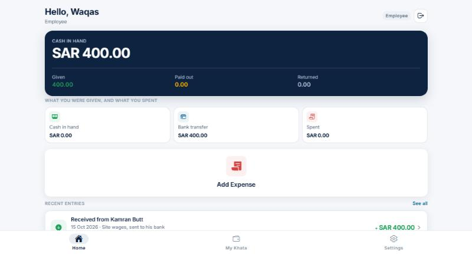
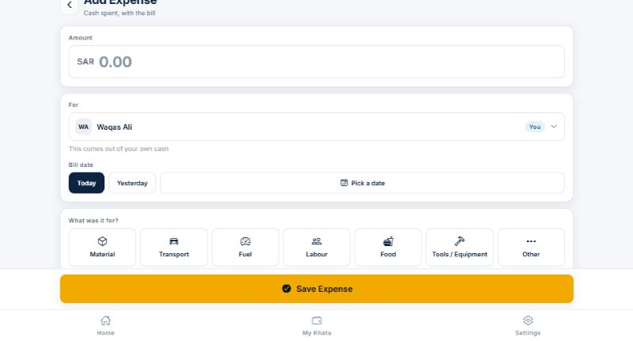
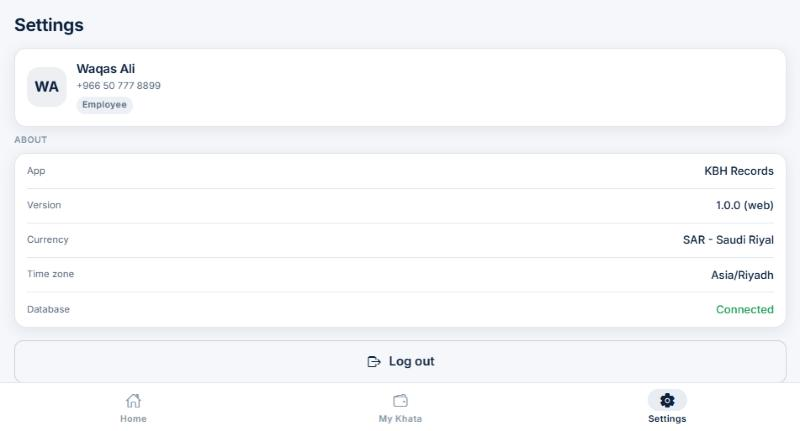
Proof
Five programs sign in as real people with their real PINs and talk to the live database exactly as the app does. They clean up after themselves. Run them again any time from the project folder.
| Suite | Checks | What it proves |
|---|---|---|
role-test | 108 | What each kind of person may and may not do — owner, admin, sub-admin, head, employee, and a turned-off account. |
team-test | 38 | Cash in hand against bank transfer, and what a head may do with his own team. |
category-filter-test | 43 | Narrowing to one category and to Petty or Invoice: rows, money, photos and the download log all follow the same filter. |
joined-up-test | 68 | The dashboard, the People list, each khata, the teams and the reports all land on the same figures. |
reports-test | 28 | The three PDFs and the photo ZIP: who may take them, that the totals agree, and that the download log cannot be rubbed out. |
An employee records spending only in his own khata. The database refuses anything else, not just the screen.
Only the Owner can change the Owner's account — including the mobile number, which would otherwise lock him out.
A head sees his own team and nobody else's. Employees never see each other.
Nobody can read a PIN. Nobody, not even the Owner, can edit or delete a line of the change history or the download log.
A bill photo has no public link and cannot be opened without signing in.
The same bill photographed twice is caught, and an invoice already claimed by its QR code is blocked outright.
Every balance equals what was given, less what was spent, sent on and returned — checked person by person.
Bills are not read automatically yet: that waits on the Google Vision key. Until then a bill says "Petty (not checked)" instead of pretending.